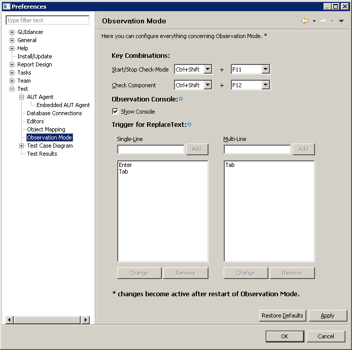

The observation mode can only be used for Java AUT's .
Start/stop check mode:
Choose which keystroke you want to use to start and stop the check mode when you are observing Test Cases in Java AUT's .
Check component:
Choose which keystroke you want to use to show the check dialog when you are in check mode. The check dialog lets you choose what property of the selected component you want to check.
Show console:
The console provides information on the actions that have been observed. This is especially useful if your AUT is running on a different machine to your client.
Trigger for replace text:
Replace text actions are observed when the focus moves from the text component to another component. Depending on your application, this may not happen automatically in some situations. Enter triggers here which you can use to signify that you wish to observe a replace text action, even if the focus does not move from the text component.
Figure 3.33: Observation Mode Preference Dialog

Copyright BREDEX GmbH 2014. Made available under the Eclipse Public License v1.0.
![\includegraphics[height=2cm]{lightbulb}](img2.jpg)